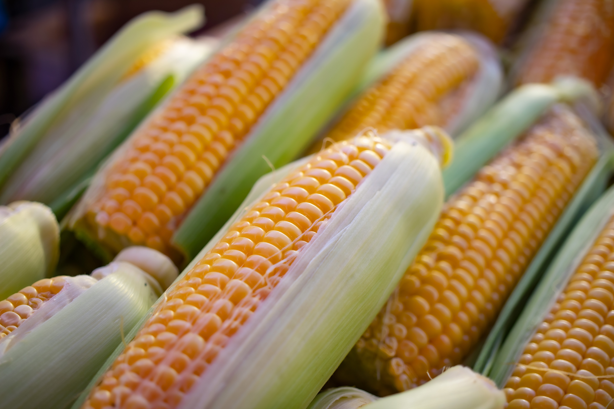

Corn

Corn is a versatile grain that offers several nutritional benefits. It is a good source of carbohydrates, providing energy for the body. Corn also contains dietary fiber, which aids in digestion and can help with weight management. In terms of vitamins, corn is rich in vitamin C, thiamine (vitamin B1), folate (vitamin B9), and niacin (vitamin B3), which are important for energy metabolism, nerve function, and red blood cell production. Additionally, corn contains minerals like magnesium, phosphorus, and potassium, which support various bodily functions, including bone health and fluid balance. Corn is also packed with antioxidants, such as lutein and zeaxanthin, which promote eye health and may help reduce the risk of certain eye conditions. While corn is not a significant source of protein, it does provide some. Furthermore, corn contains phytochemicals like ferulic acid and anthocyanins, which have antioxidant and anti-inflammatory properties. It's important to consume corn in moderation due to its relatively high calorie and carbohydrate content. Opt for whole corn or minimally processed corn products to maximize its nutritional value. Incorporating corn into a balanced diet can provide a range of essential nutrients to support overall health and well-being.